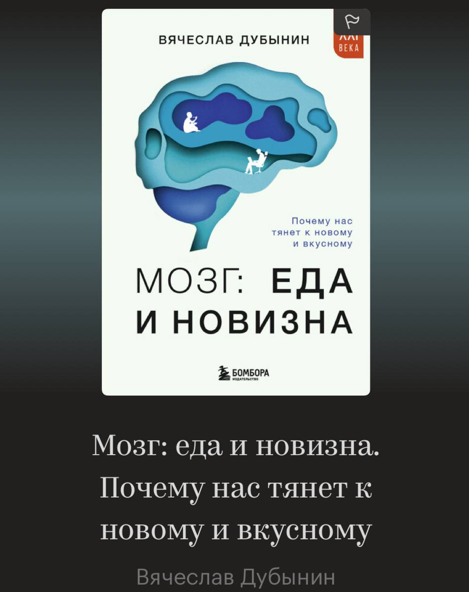
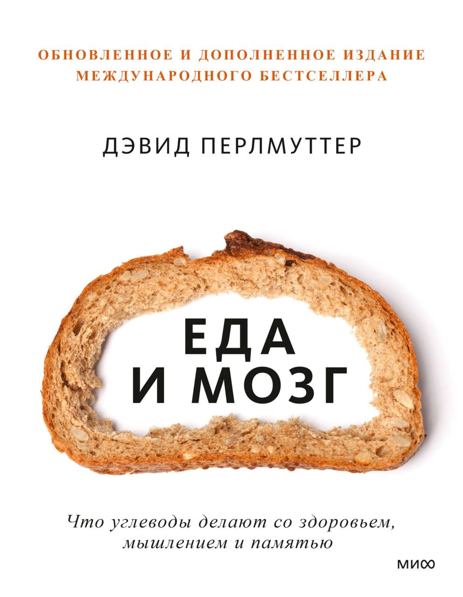
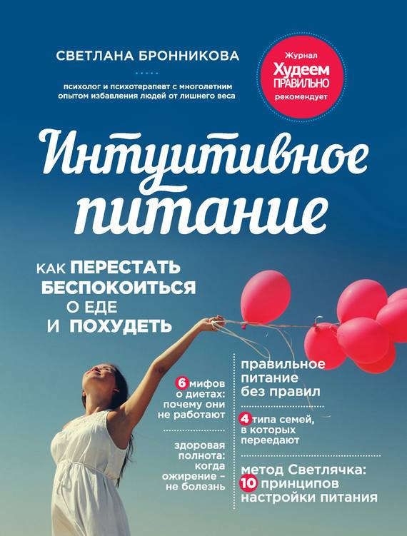
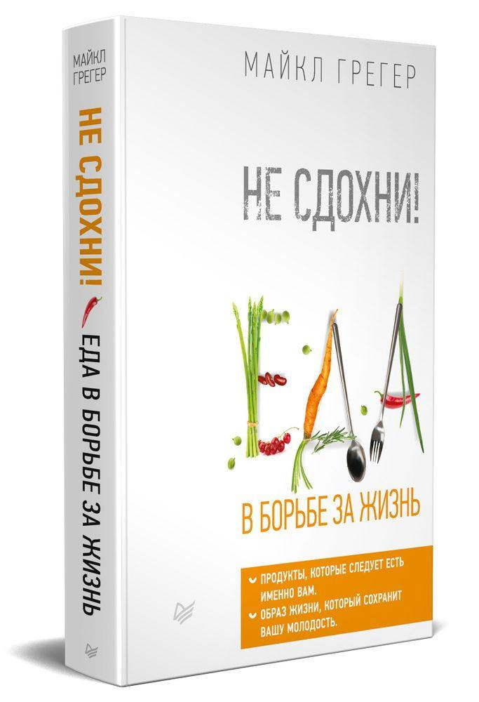
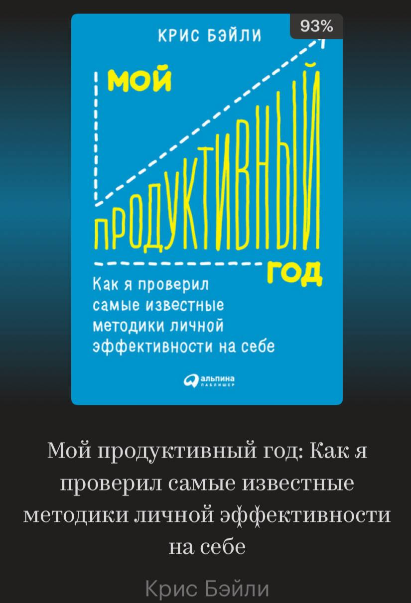
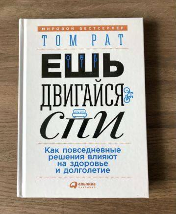
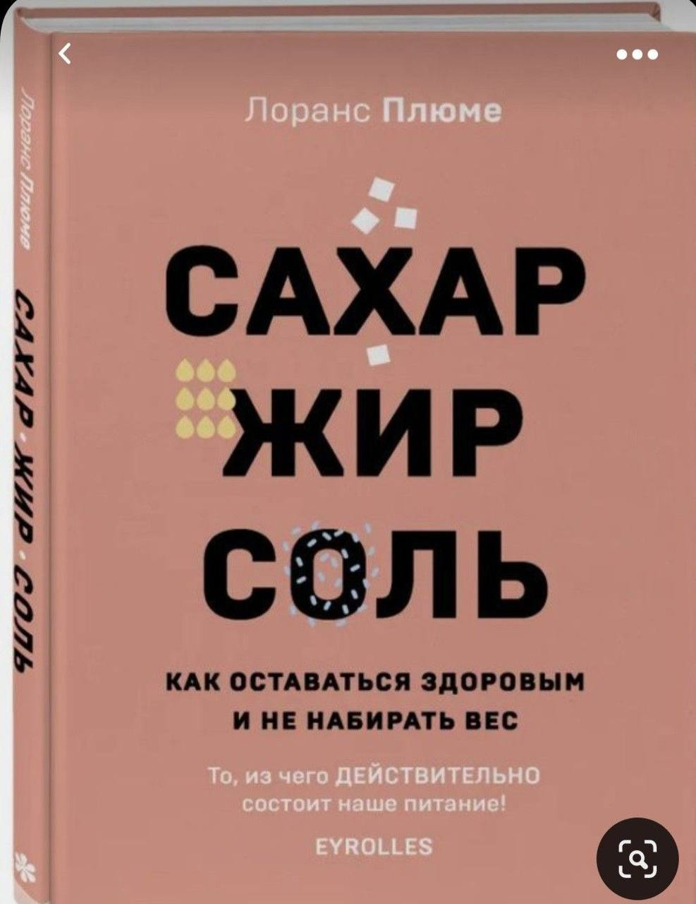
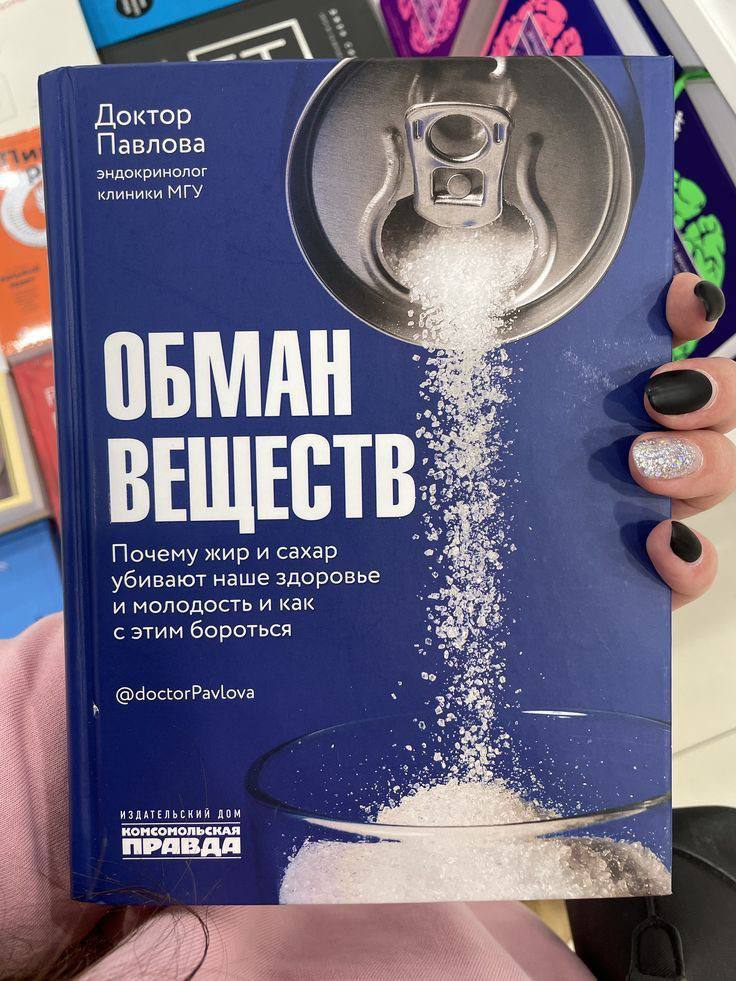
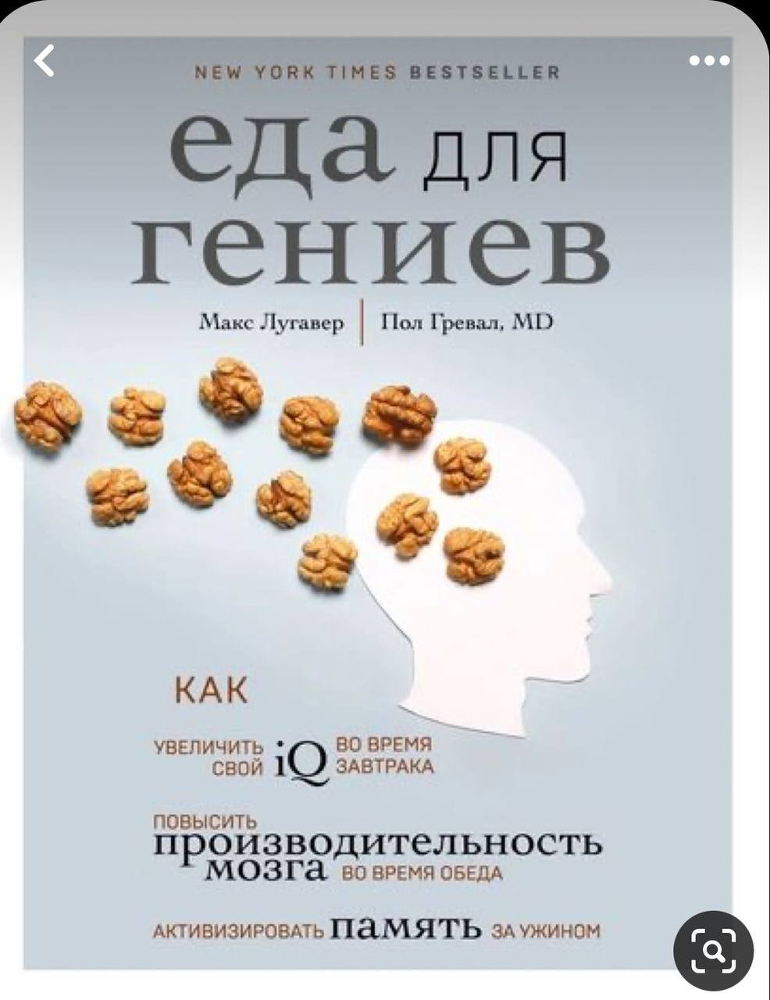
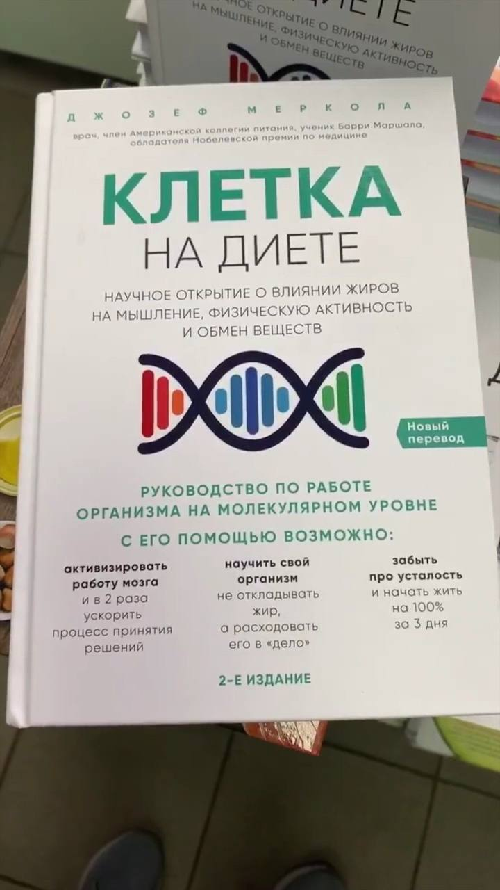

Книги о питании
"Мозг: еда и новизна. Почему нас тянет к новому и вкусному" Вячеслав Дубынин
Книга «Мозг: еда и новизна. Почему нас тянет к новому и вкусному» Вячеслава Дубынина — это яркое и доступное объяснение того, как наш мозг управляет пищевым поведением и стремлением к новизне. Автор — нейрофизиолог и профессор МГУ — соединяет научные данные с живыми примерами из жизни, чтобы показать, почему мы переедаем, «залипаем» в соцсетях или не можем устоять перед новой информацией.
📘 В книге поднимаются темы:
- как мозг реагирует на вкусную еду и почему нам сложно остановиться;
- почему стремление к стройности может перерасти в манию;
- как формируются пищевые привычки и зависимости;
- что общего у тяги к сладкому и к бесконечной прокрутке ленты новостей.
Особенность книги — лёгкий стиль, ироничный тон и множество отсылок к повседневным ситуациям. Это не просто научпоп, а попытка разобраться в себе и окружающих через призму нейробиологии.
«Еда и мозг. Что углеводы делают со здоровьем, мышлением и памятью» Дэвид Перлмуттер
Книга «Еда и мозг» Дэвида Перлмуттера — это провокационное и популярное исследование о том, как углеводы и глютен могут влиять на здоровье мозга, настроение и даже память. Автор — невролог с многолетним опытом — утверждает, что избыток сахара, хлеба, макарон и злаков может быть связан с воспалением, нарушением когнитивных функций и даже нейродегенеративными заболеваниями.
📌 Основные идеи книги:
- Глютен и быстрые углеводы — потенциальные «тихие убийцы» мозга;
- Диета с низким содержанием углеводов и высоким содержанием жиров может улучшить работу мозга;
- Холестерин — не враг, а важный компонент для нейронов;
- Отказ от сахара и зерновых может снизить риск депрессии, деменции и диабета.
Книга вызвала бурные споры: одни считают её революционной, другие — чрезмерно категоричной. Перлмуттер действительно предлагает радикальный пересмотр привычного рациона, и его подход ближе к кето- или палеодиете.
«Интуитивное питание. Как перестать беспокоиться о еде и похудеть» Светлана Бронникова
Книга Светланы Бронниковой «Интуитивное питание. Как перестать беспокоиться о еде и похудеть» — это глубокое и бережное руководство по восстановлению здоровых отношений с едой и телом. В отличие от диет, основанных на запретах и контроле, автор предлагает психологически устойчивый подход, где ключевыми становятся доверие к себе, осознанность и принятие.
Бронникова — клинический психолог с опытом работы в европейских клиниках по лечению расстройств пищевого поведения, и это чувствуется в каждой главе.
Книга сочетает теорию и практику: в ней много упражнений, дневников, «экспериментариумов», которые помогают не просто читать, а работать с собой.
Автор мягко, но убедительно показывает, как диеты могут усугублять проблему, и как интуитивное питание помогает выйти из замкнутого круга «ограничения — срыв — вина».
Один из ключевых посылов: «Тело знает, сколько и чего ему нужно. Нужно лишь научиться его слушать».
«Не сдохни! Еда в борьбе за жизнь» Майкл Грегер
Книга Майкла Грегера «Не сдохни! Еда в борьбе за жизнь» — это мощный манифест в защиту растительного питания и осознанного образа жизни. Автор — врач и популяризатор науки — собрал в ней огромный массив исследований, чтобы показать: питание может не только предотвращать, но и обращать вспять хронические заболевания, включая болезни сердца, диабет 2 типа и даже некоторые виды рака.
📌 В книге ты найдёшь:
- Научно обоснованные рекомендации по продуктам, которые реально продлевают жизнь;
- Главы, посвящённые конкретным заболеваниям и тому, как питание влияет на их течение;
- Практическое руководство: что есть, чего избегать, как выстроить рацион без фанатизма.
Особенность книги — не просто критика фастфуда и сахара, а позитивный акцент на том, что стоит добавить в рацион, чтобы чувствовать себя лучше. Грегер пишет с энтузиазмом, но и с уважением к читателю — без давления, а с вдохновением.
"Мой продуктивный год: Как я проверил самые известные методики личной эффективности на себе" Крис Бэйли
Книга Криса Бэйли «Мой продуктивный год» — это живой, честный и местами даже забавный эксперимент над собой, в котором автор в течение года тестировал на себе десятки методик личной эффективности. Он не просто пересказывает чужие советы, а проверяет их в реальной жизни: работает по 90 часов в неделю, медитирует, живёт в изоляции, ограничивает использование смартфона и даже месяц пьёт только воду.
📌 Что делает книгу особенной:
- Практичность: Бэйли отобрал 25 реально работающих техник, которые помогли ему самому;
- Фокус на трёх ресурсах: время, внимание и энергия — именно их автор считает ключевыми для продуктивности;
- Человечность: он не идеализирует продуктивность, а подчёркивает важность отдыха, смысла и заботы о себе.
Один из главных посылов: «Продуктивность — это не делать больше, а делать важное с намерением».
«Ешь, двигайся, спи» Том Рат
Книга «Ешь, двигайся, спи» Тома Рата — очень достойное чтение, если ты интересуешься темой здорового образа жизни без жёстких диет и марафонов. Она не давит морализаторством, а предлагает простые и, главное, выполнимые шаги: немного лучше поесть, чуть больше двигаться, чуть качественнее спать — и это уже влияет на здоровье и настроение.
Автор опирается не только на исследования, но и на личный опыт борьбы с хронической болезнью, что придаёт книге человечности. Формат — лёгкий, с короткими главами и конкретными советами, которые можно применять сразу. Отличный вариант для тех, кто хочет начать заботиться о себе, но не знает, с чего.
«Умные калории» Джонатан Бэйлор

Книга «Умные калории» Джонатана Бэйлора — это настоящий вызов привычным диетологическим догмам. Она предлагает смелую, но научно обоснованную идею: важно не просто считать калории, а учитывать их качество — то есть насколько пища насыщает, влияет на гормоны и метаболизм.
Автор фокусируется на том, как есть больше, тренироваться меньше, но при этом худеть и чувствовать себя лучше. Вместо подсчёта каждой крошки — акцент на цельных, питательных продуктах, которые естественным образом регулируют аппетит и вес. Это подход, который многим кажется гораздо более устойчивым, чем строгие диеты.
"Сахар. Жир. Соль» Лоранс Плюме
Книга «Сахар. Жир. Соль» Лоранс Плюме — это наглядный и практичный гид по современному питанию, особенно если ты хочешь понять, что на самом деле содержится в наших продуктах. Автор доступно рассказывает о скрытых сахарах, незаметных жирах и избытке соли в ежедневном рационе — даже там, где мы этого совсем не ожидаем (например, в «здоровом» йогурте или хлебе).
Главное преимущество — книга не пугает, а просвещает: с юмором, визуальными таблицами, простыми пояснениями. Это не про диеты, а про осознанный выбор — понимать упаковки, сравнивать составы и находить альтернативы, не отказываясь от удовольствия от еды.
«Обман веществ» Доктора Павлова
Книга «Обман веществ» доктора Павловой — это мощная попытка объяснить, почему наш метаболизм сбивается с курса в современном пищевом окружении, и как можно вернуть контроль. Автор — практикующий эндокринолог, и это чувствуется: она просто объясняет сложные гормональные процессы, разрушает мифы о «плохих» продуктах и показывает, как жир и сахар действительно влияют на здоровье и молодость.
Особенность этой книги — чёткий акцент на гормональные механизмы: инсулин, лептин, кортизол и как их баланс можно восстановить не диетами, а разумными привычками. Книга не только диагностирует, но и вооружает: практичные советы, схемы питания и объяснения того, как работает тело.
Еда для гениев» Макс Люгавар, доктор Пол Гревал
Книга «Еда для гениев» Макса Люгавара и доктора Пола Гревала — это настоящий бестселлер о том, как питание влияет на работу мозга, память и продуктивность. Авторы увлекательно и доступно объясняют, какие продукты способствуют ясности ума, концентрации и даже снижению риска нейродегенеративных заболеваний.
Формат очень удобный: практичные советы привязаны ко времени приёма пищи — завтрак, обед, ужин. Например:
- На завтрак — еда, которая «включает» мозг и повышает уровень энергии;
- В обед — продукты, улучшающие продуктивность;
- В обед — продукты, улучшающие продуктивность.
Это книга о реальных изменениях без крайностей: авторы говорят не о чудо-диетах, а о том, как маленькие корректировки в рационе дают большие результаты для мозга и тела.
«Клетка на диете» доктор Джозеф Меркола
Книга «Клетка на диете» доктора Джозефа Мерколы — это смесь нутрициологии, клеточной биологии и немного провокационной мотивации. Её идея в том, что не просто еда формирует нас, а то, как наши клетки воспринимают её — и как мы можем управлять этим процессом, чтобы включить сжигание жира, повысить умственную энергию и общее самочувствие.
Меркола активно продвигает концепцию метаболической гибкости: умения организма переключаться между источниками энергии — углеводами и жирами. В основе — научные данные, но с популярной подачей и элементами «биохакинга». Ощущается уверенный тон — мол, «настройте митохондрии, и почувствуете силу».
Книга может вдохновить начать перестраивать рацион в сторону цельных, насыщающих продуктов, но требует критического взгляда: не все советы универсальны, особенно без учёта медицинского контекста.
«Как мы едим» Би Уилсон
Книга «Как мы едим» Би Уилсона — это интеллектуальный и одновременно тёплый взгляд на то, почему мы питаемся так, как питаемся, и можно ли изменить пищевое поведение, не ломая себя.
Автора особенно интересует не диета, а привычки, с детства до взрослой жизни: почему одни дети любят брокколи, а другие — только фастфуд, почему семейные обеды формируют будущее пищевое поведение, и как культура, реклама и окружение программируют нас на определённый выбор еды.
Отличительная черта книги — личный, почти исповедальный тон. Это не просто научно-популярная работа, а рефлексия матери, исследовательницы и наблюдательной рассказчицы. Би Уилсон призывает не к запретам, а к переосмыслению — осознанному питанию как акту заботы о себе.